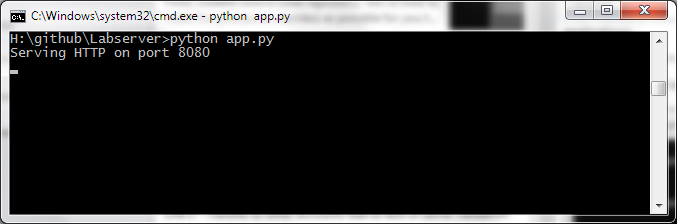
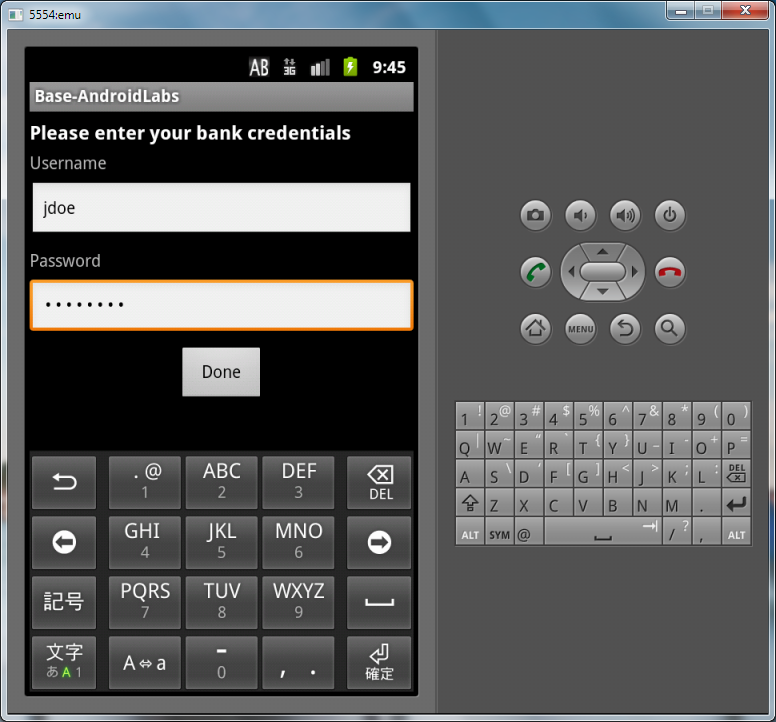
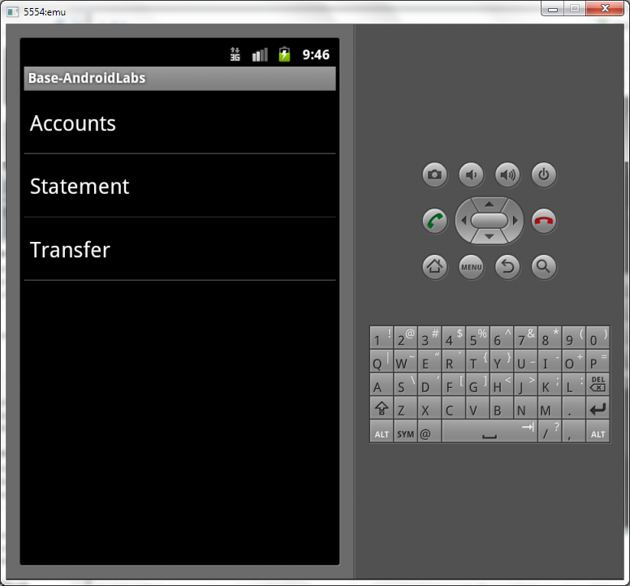
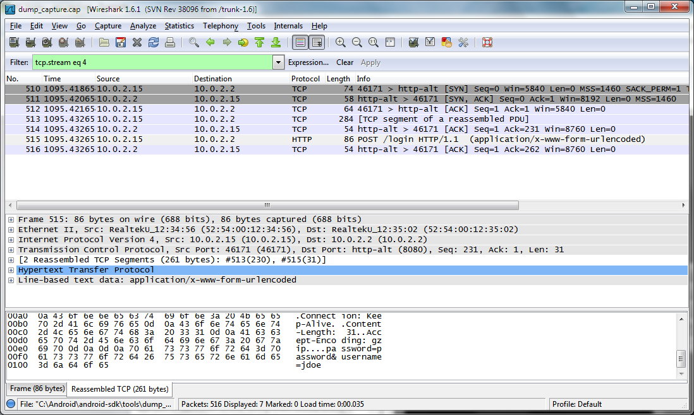
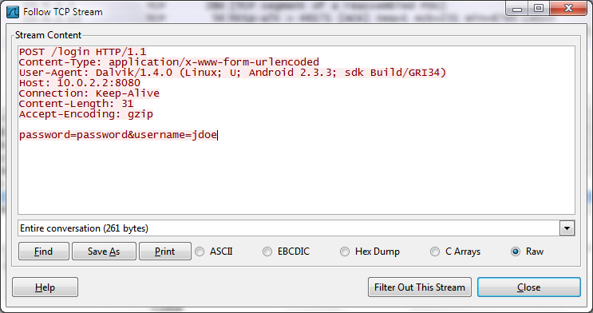

Lab 1 - Secure connections
The android apk that we'll use for most labs is the base.apk
This is a simple lab, but it demonstrates a key point that sometimes is forgotten, which is that mobile device traffic can still be sniffed.Let's learn how to see the traffic in clear-text using the android emulator.
The Android emulator has a built in setting to capture network traffic which makes it much easier for us to sniff data from android applications.
To run, we perform:
emulator.exe -avd emu -tcpdump test.cap

this will perform a dump of the network traffic into the “test.cap” file.
Our labs consist of two components ,the lab and the server so make sure the server is running! Again, you can do this by:
python app.py

Now, launch the Lab APK file and install it to the emulator through any IDE of your choice, in our case, we'll use Eclipse.
Upon first launch, the lab will ask for a username and password to your banking account. This, like in a real application could either be done securely (encrypted) or insecurely.
The first lab is about network encryption, so clearly we'll have to look at the network TCP dump to see how the application is performing authentication.
Let's login using:
username: jdoe
pw: password

Now you'll see the main screen if the login was successful.

Let's analyze how the application performed the login procedure. Open up the cap file in Wireshark.
Find the HTTP stream where the application logs in within the packet history. You'll see it highlighted by HTTP and green.

Once you click on it, observe the contents of the HTTP packet and you'll be able to notice something about how the applicatoin authenticates.

do you see it? Authentication is performed in clear-text, allowing anybody on the network to sniff the user's bank credentials.